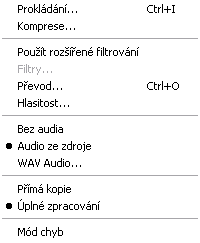

Nabídka "Audio" - VirtualDUB
Co k čemu je
- Prokládání...
- pokud se vám neshoduje video se zvukem, můžete zkusit nastavit prokládání.
- Komprese...
- volíte, jakým kodekem komprimovat audio, doporučuji MPEG Layer III.
- Použít rozšířené filtrování
- volíte, zda použít "Filty..." (viz níž) nebo "Úplné zpracování" (viz níž).
- Filtry...
- nastavení filtrů. Pokud na to nejde kliknout, klikněte na "Použít rozšířené filtrování". Věnuji se tomu podrobněji jinde.
- řevod...
- převádí vzorkovací frekvenci zvuku, doporučuji nechat. Pokud se vám však zvuk opožďuje za videem, zkuste převod na 48.000Hz. Pokud na to nejde kliknout, musíte vykliknou "Použít rozšířené filtrování" (viz výš) nebo "Úplné zpracování" (viz níž).
- Hlasitost...
- zvyšuje (nebo i snižuje) hlasitost, používal bych to jenom v nouzi.
- Bez audia
- udělá z filmu němý film.
- Audio ze zdroje
- použije zvuk, který už v AVI je.
- WAV Audio...
- přidá do videa audio stopu z WAV souboru (třeba písničku).
- Přímá kopie
- VirtualDUB nepracuje s audiem vůbec, prostě ho jenom kopíruje.
- Úplné zpracování
- VirtualDUB zpracovává audio.
- Mód chyb
- nastavení výpisu chyb v dekódování.
Předchozí: nabídka "Video"
Další: nabídka "Nástroje"
Video na PC: Vytvořeno v roce 2005 a víc. Autorem je Jan 'Šlaha' Šlahora. Veškerá práva vyhrazena autorům článků. Pokud není uvedeno jinak, jsem to já.